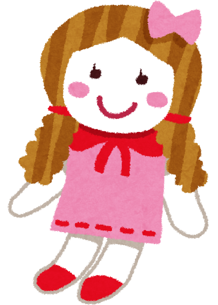

我が家には、捨てても帰ってくる曰く付きの人形がある。
あっ、やっぱり……昨日きちんとゴミ捨て場に置いてきたはずなのに、今日もある。
…………。
試しに違う場所に捨ててみようか。
そうだな……。
さてさて、今日はどうだろうか。
あ……。やっぱり今日もある。
に捨てたはずなのに
もっと遠くに捨ててみよう。そうだな……。
さて、今日は……
あれ？ なくなってる！
やった！ やっぱり
に捨てたのが良かったんだな。
目を開けると、朝のはずなのに真っ暗だった。それにとても窮屈で戸惑う。
……？ ここは？
遠くから車が近づいてくる音が聞こえる。ということは外か。
車がすぐ側で止まり、人が降りてくるのが気配で分かった。
ふいに、世界がぐらっと揺れた。
『うわっ、重い。これ中身、本当に燃えるゴミか？』
『なか、確認しますか？』
男ふたりの声がする。
ここで私は気づいた。もしかして、私はゴミ袋の中に……？
驚いて、とっさに声を出そうとしたが、なぜか出ない。
片方の男が言う。
『いや、少し遅れてるからな。まあ、大丈夫だろう』
私が入った袋が持ち上げられる。投入口のプレス機の音が聞こえる。